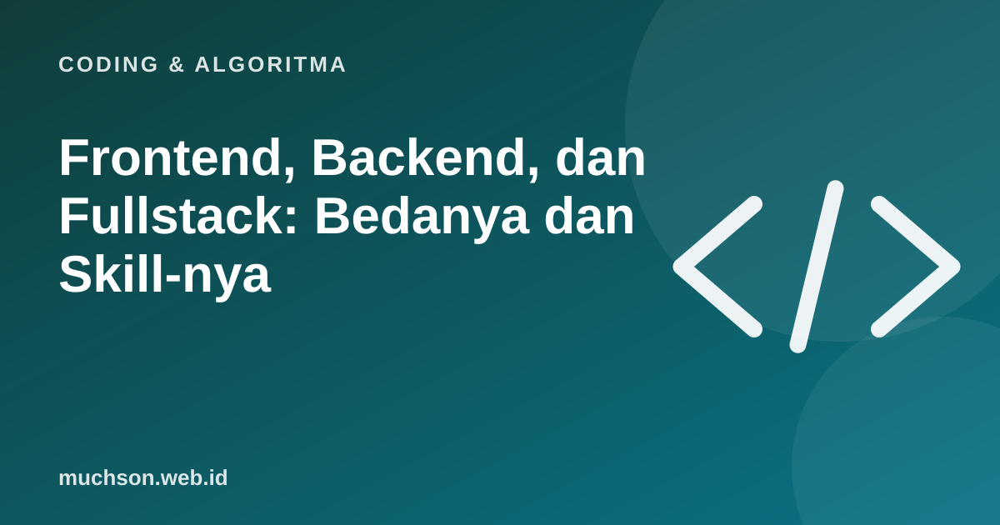

Beranda › Artikel › Coding & Algoritma
Coding & AlgoritmaFrontend, Backend, dan Fullstack: Bedanya dan Skill-nya
Lowongan programmer sering menulis "frontend developer", "backend engineer", atau "fullstack". Bagi pemula, ketiganya terdengar mirip. Padahal pekerjaannya cukup berbeda. Memahami perbedaannya membantu Anda memilih jalur belajar yang sesuai minat.

Analogi restoran
Frontend developer
Frontend developer membangun bagian aplikasi yang dilihat dan dipakai pengguna: halaman, tombol, formulir, animasi. Fokusnya adalah tampilan yang benar di berbagai layar, mudah dipakai, cepat, dan aksesibel.
- Inti: HTML, CSS, JavaScript.
- Kerangka kerja: React, Vue, atau Svelte.
- Pendukung: desain responsif, aksesibilitas, performa web, TypeScript.
- Contoh tugas: membuat halaman checkout yang nyaman di HP.
Backend developer
Backend developer membangun logika di balik layar: menyimpan dan mengambil data, autentikasi, pembayaran, dan API yang dipakai frontend maupun aplikasi lain. Fokusnya adalah kebenaran logika, keamanan, dan kemampuan menangani banyak pengguna.
- Bahasa: salah satu dari Node.js (JavaScript), Python, Go, Java, PHP.
- Database: SQL (PostgreSQL, MySQL) dan kadang NoSQL.
- Pendukung: desain API, keamanan, cache, antrean pesan, cloud.
- Contoh tugas: membuat API yang mencatat pesanan dan mengurangi stok tanpa salah hitung.
Fullstack developer
Fullstack developer bisa mengerjakan keduanya. Biasanya kuat di satu sisi dan cukup mampu di sisi lain. Peran ini umum di startup kecil dan proyek freelance, di mana satu orang membangun produk dari awal sampai akhir.
Fullstack bukan berarti ahli di semua hal. Banyak fullstack developer yang baik memulai dengan menguasai satu sisi dengan sangat baik, lalu melebar.
Perbandingan
| Aspek | Frontend | Backend | Fullstack |
|---|---|---|---|
| Hasil terlihat | Langsung di layar | Tidak langsung, lewat data dan API | Keduanya |
| Tantangan utama | Banyak ukuran layar dan browser, pengalaman pengguna | Keamanan, skala, konsistensi data | Luasnya cakupan |
| Cocok untuk yang suka | Visual, detail interaksi | Logika, sistem, data | Membangun produk utuh |
Jalur mana yang cocok?
Ingat, pilihan pertama tidak mengunci selamanya. Banyak developer berpindah jalur setelah beberapa tahun karena menemukan minat baru.
Tanya jawab
Apa beda frontend dan backend?
Mana yang lebih mudah dipelajari?
Apakah fullstack harus menguasai semuanya?
Bahasa apa untuk backend?
Sumber dan bacaan lanjut
- MDN: Learn web development
- Apa itu API (artikel terkait)
- HTML, CSS, JavaScript: peran masing-masing (artikel terkait)